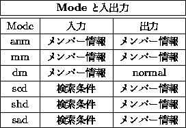

名簿管理システムでは、メンバーの追加/更新/削除/検索を行なうことができ る。
コマンドの使い方
名簿管理システムのコマンドは次のように使用する。
irpr_client Mode < ファイル名
上記のModeで操作を指定し、標準入力には検索条件やメンバー情報を与えると、 実行結果が標準出力に出力される。
Modeには、以下のものが指定できる。
上記のModeと入出力内容の関係を表にまとめると、次のようになる。

なお、異常終了の場合は、その旨、標準出力に出力される。
更新と削除の場合、更新前及び削除されたメンバー情報は、テーブルmeibo-historyに移される。更新の場合は、与えられたメンバー情報のversionが、自動的に 適正な値に更新される。
メンバー情報
次に、メンバー情報の例を示す。
[id("0000000099"),
name_e("Tommy Hase"),name_for_search("Tommy Hase"),name_for_search("トミー・ヘイズ"),
name_for_search("トミーヘイズ"),name_for_search("トミーヘーズ"),
prefix("Mr."),organization
メンバー情報のデータ形式については、以下の規則に従わねばならない。
検索条件
次に、検索条件の例を示す。
検索条件は、次の規則に従わなければならない。
<条件> ::= 属性名 <比較演算子> <固定検索値>
| 属性名 ＝ <固定検索値>
| 属性名 ＝ <部分一致検索値>
| ( <条件> )
| <条件> <論理演算子> <条件>
<部分一致検索値> ::= "*検索値" | "検索値*" | "*検索値*"
<固定検索値> ::= 整数値 | <部分一致検索値>でないストリング
<論理演算子> ::= and | or | dif
<比較演算子> ::= > | >= | < | =<